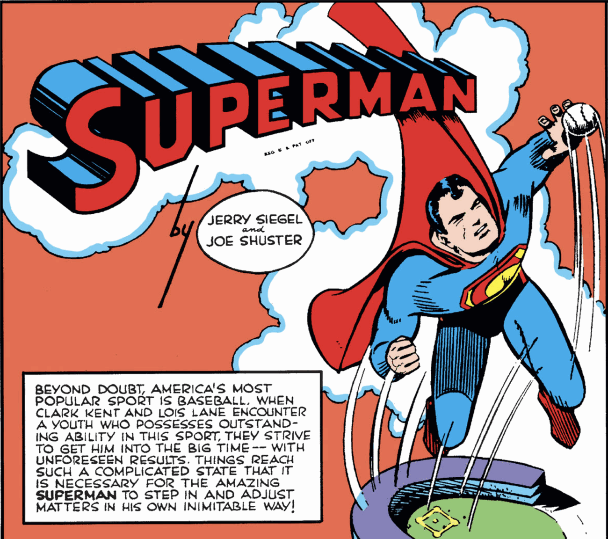
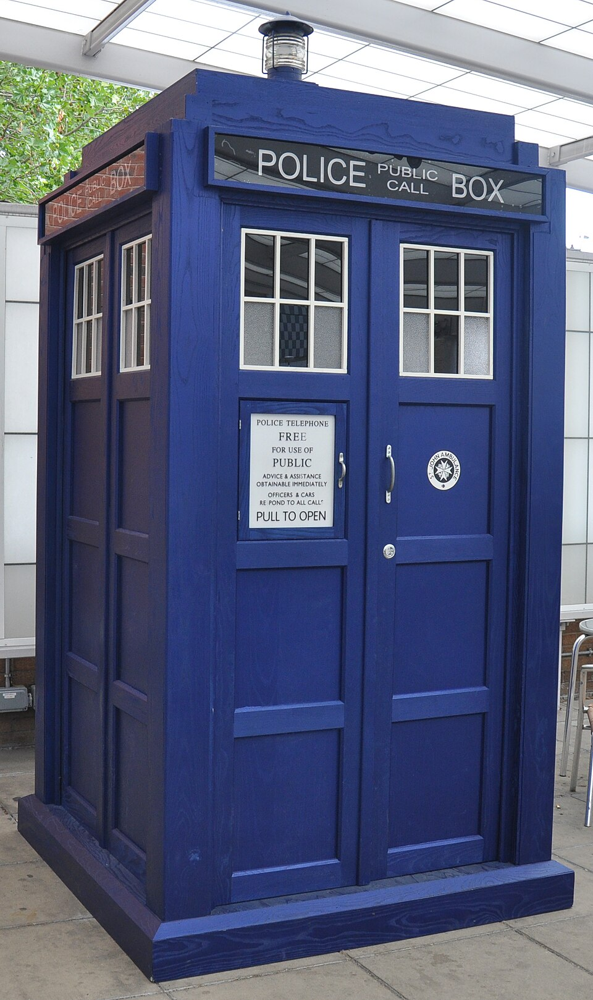

Why One-Quarter? The Most Famous Number in Black-Hole Physics Is a Coin Flip — Twice
I was always the one person in the room who wanted to actually understand what the professor was droning about. And for the most part, I was (still am) also highly suspicious of hand-waving arguments and the ‘proof by intimidation’ practice. So much so, in fact, that in the second year of my bachelor’s in physics and computer science, when they taught us thermodynamics as the black magic that it is, it drove me to add a mathematics major.
So it shouldn’t come as a surprise that when I was introduced to the ¼ coefficient in the black hole entropy formula, I was suspicious.
But maybe I should first tell you what that is. When you throw a baseball up, it usually comes down — except on Tuesdays, Tuesdays are rough. But it is possible to throw a baseball so hard that it escapes Earth’s gravity, never to come back. Think of Superman as a pitcher. We eggheads call that velocity ‘escape velocity’. Formally, it’s the velocity required for an object to continue to travel to an infinite distance from Earth, while taking into account that gravity always decelerates the object.

“Superman” by Jerry Siegel and Joe Shuster, DC Comics (Golden Age). · © DC Comics, shown for commentary.
Turns out, this escape velocity is dependent on the mass of the object you’re trying to escape. So, there might be objects massive enough to necessitate an escape velocity faster than light. But we already knew that about 250 years ago.
However, it took Einstein publishing his theory of general relativity, and Karl Schwarzschild having the balls to point out that there is a valid mathematical solution in which space-time is ‘ripped’ to arrive at the modern idea of black holes.
Since information travels at the speed of light, this means that for us, who live on the outside of a black hole, information coming from the inside of the black hole is simply not available. It doesn’t mean that it is not there. Supposedly, there IS something on the inside; it’s just that we can’t get any information from the inside.

Photo: Babbel1996, CC BY 2.5, via Wikimedia Commons.
Black holes are magical. In the sense that they are fascinating, and that we don’t really understand them fully. They are also beautiful mathematically, but that may just be me.
But, back to information. And entropy. Because, grudgingly, we need to discuss entropy.
The simplest way to understand entropy is as the limit of what you can say for sure, given the information available to you. For instance, suppose you have 4 coins. You can only look at 3 coins. They are all heads. Someone tells you that any two of the four always match. While you directly observe only 3 coins, you can assert that the last coin is also heads. So entropy is zero in that case. You know everything that CAN be known about the system (in that context). However, suppose you don’t get that second piece of information. Now you have a free coin that can either be heads or tails. Entropy is now greater than zero, because you can be certain of less than before.
In the 1970’s, Jacob Bekenstein (whom I’ve had the privilege of studying under, and was one of the sweetest people I’ve ever met), came up with the idea of black hole thermodynamics and found that the entropy of a black hole is proportional to its surface area.
in which \(k_{B}\) is the Boltzmann constant, \(A\) is the surface area of the black hole, and \(\ell_{p}\) is Planck’s length.
So if you look at the formula (ha! made you look!), we have physical quantities, but the ¼ coefficient, where did that come from? (‘Who ordered that?!’).
Why four? Why not three, why not π? I went at it for years, from every side I could find a door to: information theory, chaos and mixing, state-counting, coarse-graining. Every route could be made to arrive at the four. None of them told me why it had to be there. What I wanted — what I never quite stopped wanting — was a clean explanation. Not a derivation you have to be walked through with both hands, ornate enough that you mistake the effort for depth. Something you could see in a single breath and then not be able to un-see.
And the standard way of “explaining” it is exactly the kind of thing that never satisfied me. For half a century, you first pick a theory of what a black hole is secretly made of — tiny vibrating strings, or woven loops of space, or a hologram smeared on the horizon — count the microscopic states that theory allows, and check that the count reproduces A/4. When it does, everyone cheers. But look closely at what just happened. You assumed what the black hole is made of, tuned a knob until the famous number fell out, and called the tuning an explanation. Every such derivation begins by naming the stuff inside. The one-quarter is never derived. It is matched.
Well, I’m being MOSTLY right here, after all, the first time ¼ appeared was due to Hawking’s formulation, which didn’t rely on a tunable knob. In his formulation, he used quantum field theory and general relativity to get the ¼ coefficient. This has its own set of problems, but not nearly as theoretical as assuming we know what a black hole is made of.
Anyway, this always struck me as looking in precisely the wrong place. We keep hunting for the factor in what the horizon contains. What if it was never about the contents at all — what if the one-quarter is a statement about an absence, about what a horizon, by its sheer geometry, refuses to let you have?
Consider the Earth. Every point on the span we live in can be described as a combination of 3 numbers: Longitude, Latitude, and Altitude — (Long, Lat, Alt). Now, if we add a constraint, such as ‘the longitude and latitude always have to be summed to zero’, one coordinate becomes superfluous because now you only need to supply (Long, −Long, Alt), or more succinctly — (Long, Alt). This traces out a 2D surface embedded in the 3D volume.
Now take this to 4 dimensions. It’s exactly the same. If we supply a condition such as, say, energy conservation1, the 3 spatial dimensions plus 1 temporal are reduced to 2 spatial plus 1 temporal.
Now, on an event horizon (the cusp that differentiates between what we can in principle see and what we can never see under any conditions), time is frozen. Formally, this is a bit complex, but a good way to think about it is, if you move at the speed of light, everything freezes in comparison.
So, now we are left with only 2 spatial dimensions, which means the ledger now has only 4 slots. Up to now, everything, however involved, was a run-of-the-mill physics derivation. We naively expect 4 live directions, and I’ll show you that only one of them is really accessible.
Let’s take a slight detour and go back to baseball pitches.
When the ball leaves the pitcher’s hand, its trajectory, the path it moves in, is completely specified. It is a specific correlation between the distance from the pitcher and the location of the ball. Unless something truly weird happens (usually on a Tuesday), a curveball will trace a curve, and a fastball will shoot directly to the umpire’s crotch (ouch).
In physics, this is known as initial conditions. And once you specify the initial conditions and the system, you don’t need time to know what the trajectory is. It’s just some curved line, and the initial conditions specify WHICH line.
On the black hole, there IS no time, so we are pressed into looking ONLY at trajectories. This is called ‘conscripted time’, or ‘dressing time’. So now, a line is only 1-dimensional, and so we have only 2 slots remaining. Now we have to consider what time does. It dictates the direction of flow. Specifically, it divides between things that go into the future and things that go into the past. However, in this case, we are privy only to things that go into the future. Things that should go into the past are hidden behind the horizon.
To sum up, we started thinking we have 4 slots, and ended up understanding that we actually only have enough information to account for 1 slot. This is the ¼ coefficient.
I have taken to calling it the causal quartering. The horizon charges you a toll twice — once to run its clock, once because it only opens one way — and the toll, both times, is exactly half. The celebrated \( S = \dfrac{k_{B} A}{4\,\ell_{P}^{2}} \) is not hiding a microscopic secret. It is bookkeeping at a two-gate tollbooth, and the geometry of four-dimensional spacetime sets the price.
Notice what did not go into that. No Einstein equations (because most of you would void your stomachs at the sight). No model of the interior (because no one actually knows — that’s the whole spiel!). It comes out the same whether the true theory of gravity turns out to be strings or loops or something nobody has dreamed up yet, because it never asks. It asks only what a one-way surface of light, in four dimensions, will geometrically permit an observer to know.
Maybe more ludicrous, but absolutely magnificent, is the fact that this analysis is true for every event horizon, regardless of whether we are on the inside or the outside of it. The causal quartering works for any horizon. And the kicker is that we do sit inside one. Our universe expands fast enough that there are regions whose light will never reach us, no matter how long we wait. That boundary is the cosmological event horizon — and it is not the edge of the observable universe, nor the cosmic microwave background. That last-scattering surface is just where light happened to break free; probe with gravitational waves, and you’d see clean through it, almost to the Planck instant. The light curtain is the shallowest screen there is, not a wall. The event horizon is the wall — and it doesn’t care what you look with. Light, gravity, neutrinos: all ride the same light cones, all stop at the same boundary. And that boundary has an entropy of its own, every bit of it divided by — of course — the very same ¼. Mind = blown.
Make it concrete, because the number is the joke. A black hole the mass of the Sun has an entropy of roughly ten to the seventy-seventh — a count with seventy-seven zeroes after it, more bits than there are atoms in a respectable stretch of the galaxy. And every last one of those bits is multiplied by a coefficient that is, once you scrape off fifty years of decoration, one-half times one-half. The most colossal entropy in nature rides on a coin flipped twice. I find this almost unbearably satisfying, and I am aware that this says something about me.
Because I say so2, and I’m smart. No. Not really.
It simply reflects the gap between what we think we may know and the fraction of information that is actually accessible.
So the student who asked where that ¼ came from found out that the answer is far simpler than it was made out to be. It’s all about what any possible observer can and can’t know.
Dr. Ira Wolfson is a physicist and Senior Lecturer at Braude College of Engineering, Israel. His research spans gravitation, thermodynamics, philosophy of science, and the odd gerbil. The full technical paper, “On a geometric interpretation of the 1/4 factor in black hole entropy,” is published (open access) in Classical and Quantum Gravity: doi.org/10.1088/1361-6382/ae7fe8.